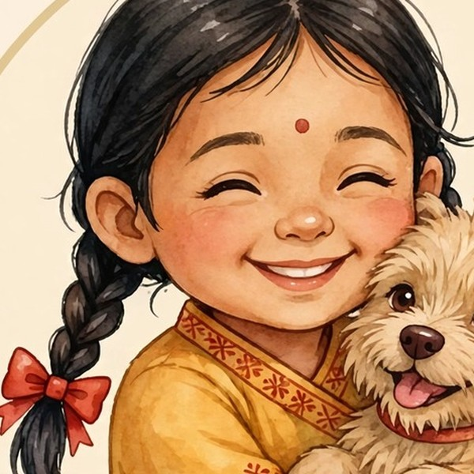

Maya
Main characterAge
About 6 years old
Home
A hill village in Nepal, with her Grandmother
Outfit
Rose-pink kurta with white embroidery, white shalwar, pink sandals, two black braids with red ribbons
First appearance
The Dog Who Wore Marigolds (Book 1)
Personality
Kind, generous, brave, curious
Who is Maya? Maya is a six-year-old girl who lives with her Grandmother in a little village between the hills and the sky in Nepal. She loves festival week most of all — the marigolds, the lights, the music — and she has the biggest, kindest heart in the village.
When Maya finds a scruffy stray puppy with no garland on Kukur Tihar, the day of dogs, she doesn't hesitate: she gives him her own brightest marigold garland, the one she spent all morning stringing. That is Maya in one moment — whatever she has, she shares.
Signature moments
- Strings the brightest marigold garland in the village — then gives it to a stray puppy (Book 1)
- Breaks her temple garland in two to share with a baby monkey (Book 2)
- Climbs the 365 steps to Swayambhunath with Grandmother every spring (Book 2)
- Follows Grandmother's bedtime tales into real adventures, from Chitwan's jungle to Lumbini's gardens (Books 3–5)
Did you know? Maya's two black braids with red ribbons never change — her outfit is exactly the same in every book, so young readers can always spot her.